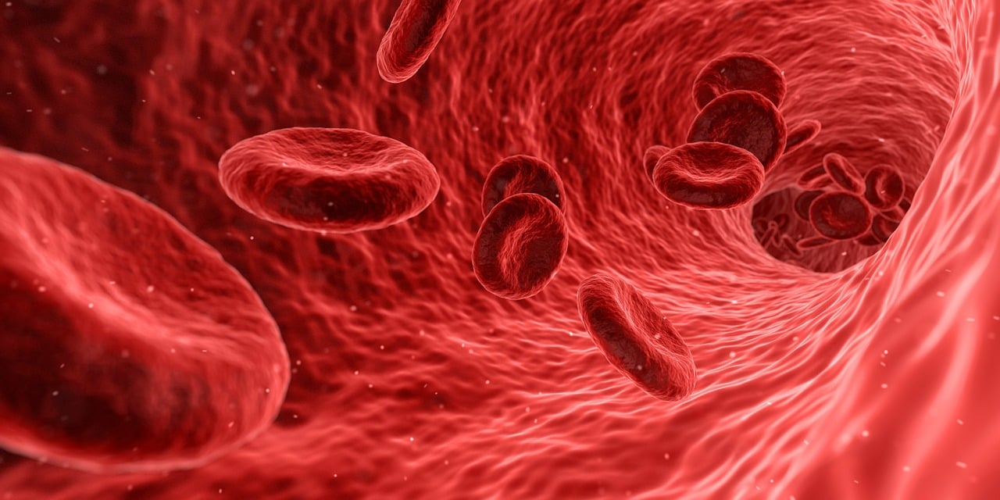

Promoción de la salud
La medicina ayuda a promover la salud y el bienestar de las personas a través de la prevención de enfermedades y la promoción de
estilos de vida saludables. Los profesionales de la medicina ofrecen educación, asesoramiento y recursos para ayudar a las
personas a mantener hábitos saludables y prevenir enfermedades.

Diagnóstico y tratamiento de enfermedades
Los médicos y otros profesionales de la salud están capacitados para diagnosticar y tratar una amplia gama de enfermedades y
afecciones médicas. Utilizan su experiencia, habilidades clínicas y tecnología médica avanzada para evaluar los síntomas,
diagnosticar enfermedades y proporcionar tratamientos efectivos.

Alivio del sufrimiento
La medicina juega un papel fundamental en aliviar el sufrimiento físico y emocional de las personas que padecen enfermedades y
lesiones. Los profesionales de la medicina brindan cuidados compasivos y tratamiento para aliviar el dolor, mejorar la calidad
de vida y ofrecer apoyo a los pacientes y sus familias durante momentos difíciles.
Avances médicos y científicos
La medicina impulsa continuamente el avance de la ciencia y la investigación médica, lo que lleva a nuevos descubrimientos,
tratamientos y tecnologías que mejoran la salud y salvan vidas. Los investigadores médicos trabajan en una amplia variedad de
áreas, desde la genética y la biología molecular hasta la farmacología y la epidemiología, para encontrar nuevas formas de
prevenir, diagnosticar y tratar enfermedades.

Atención médica equitativa
La medicina es fundamental para garantizar que todas las personas tengan acceso a la atención médica de calidad,
independientemente de su origen étnico, género, nivel socioeconómico o ubicación geográfica. Los sistemas de salud y los
profesionales de la medicina trabajan para abordar las desigualdades en el acceso a la atención médica y brindar atención
equitativa a todas las personas.